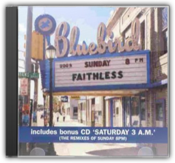

Everything Everything - Limited Edition Slipcase
Underworld
Everything Everything - Limited Edition Slipcase
Underworld


Underworld returned from the Beaucoup FishWorld Tour at the end of 1999, utterly exhausted after almost two years of international touring. It was the final straw for deck-wizard Darren Emerson, who picked up his record box, jetted off to Uruguay, and claimed his mantle as a globe-trotting international DJ, turning his back on Underworld forever. Rick Smith, however, reacted to the experience of coming off tour in a very different way. Locking himself in the studio for eight months, he watched and listened to tape after tape of the Underworld live experience, examining it, dissecting it, evaluating it. The result is Everything, Everything, a 75-minute compilation of the band's greatest onstage moments, from a rampant, super-fast "Shudder/ King Of Snake" to a breathtaking closing hybrid of techno milestones on "Rez/ Cowgirl"—not forgetting, of course, a frenetic thunder through the band's ultimate crowd-pleaser, the heavenly proto-trance anthem "Born Slippy". To the Underworld disciple, Everything, Everythingwill surely come as manna from heaven. —Louis Pattison

Sunday 8pm (includes bonus cd Saturday 3am)
Faithless
Faithless are actually a band of multiple faiths, both musical and spiritual, including Buddhism, hippy idealism and rave fanaticism. All these elements are sublimated into their dance sound, and after their mid-Nineties million-selling single "Insomnia", they were mistakenly dismissed as disposable Euro-house. The diversity of Sunday, 8pmgives the lie to this notion. It's galvanising dance music for sure, with big, overarching crowd-pleasing synth riffs courtesy of keyboardist Sister Bliss and non-performing Brian Wilson-style programmer Rollo. But then Boy George guests on "Why Go", a big ballad with a simple plea, while "Bring My Family Back" and "Take The Long Way Home" feature quietly intense, first-person raps reminiscent of Massive Attack, whose shadowy, ominous sense of melancholy is in evidence throughout the album. So when "God Is A DJ" breaks through the clouds and fills the dancefloor, it's more than just easy triumphalist hedonism; it is a blessed relief, a pleasure earned. —David Stubbs
ISDN
Future Sound Of London

"They're so antisocial," said Mixmaster Morris of the reclusive Future Sound of London. "They won't even go to parties anymore—they do all their gigs over the telephone." After the success of their majestic "Papua New Guinea" single and the Acceleratoralbum from which it was taken, FSOL retreated to the studio and never left. Their only communication with the outside world was through their music, an increasingly abstract Dadaist collage of overdubbed beats and noises that defied genres and stymied trend-happy journalists. While some of the material on ISDNwas previously released under the pseudonym Far Out Son of Lung (the worst-kept secret in dance music), the bulk of the album was taped from performances delivered via digital telephone links to radio stations throughout Europe. Naturally, the ubiquitous and intrusive medium of radio encourages challenging and elaborate environmental music. So unlike their previous album, Lifeforms, whose closest earthly relation was techno, ISDNis the distant cousin of jazz, both in its blatant sampling of sax and drums and its freeform, exploratory nature. —Matthew Corwine  The Altogether
Orbital
The Altogether
Orbital
During their long reign as one of dance music's most endearing acts, the Orbital sound has rarely changed. The result: five albums of beautiful electronic space-symphonies, blunt dancefloor beats and eccentric cinematic themes. And so to album six, 2001's The Altogether. From the start, it's clear that this is no ordinary Orbital album. Gone are the space-opuses of old, replaced by rock-sampling instrumentals, what can be described as "techno skiffle" numbers and David Gray collaborations. Of the 11 tracks here, three are punk-sampling breakbeat romps (think 1996 hit Satan), two are full-on vocal numbers and one's a breakneck drum-and-bass tune about rioting (the Scott Walker-inspired Meltdown). Sure, all the familiar elements are here—tracks such as "Pay Per View", "Doctor Who" and "Shadows" are classic Orbital—but they're no longer the most dominant themes. While fans may find The Altogetheruncomfortable listening at first, it's easily the Hartnolls' most varied album to date. Within its 60 minutes lies some of the duo's most inventive and enjoyable music in years. This is a real mixed bag, for sure, but one that demands repeat listens. —Matt Anniss  Deadringer
RJD2
Deadringer
RJD2
There's a mellifluous, melodic feel to RJD2's production on Deadringerthat enables him to easily straddle the US/European divide between hip-hop and trip hop, even coming close to the intricate and lucid inventiveness of the Avalanches in places.  Play
Moby
Play
Moby
The great iconoclast of techno returns with a smooth, sacred and exhilarating record. Play's concoction of breakbeat rhythms, ambient mixology and inspired blues and gospel samples cry out across musical genres and histories, imparting a time-tested wisdom to beat-driven ears. Moby's devout faith—in both God and his own musical whims—give this approach a sort of legitimacy that another, less sincere artist would never have. That sincerity reverberates through the beats and instrumental eclecticism like a pulse. The soulful refrains and proclamations in "Find My Baby" and "Natural Blues" somehow nestle between straight-up dance-floor rave-ups ("Bodyrock") and melt-in-your-mouth ambience ("Inside") with an effortless grace. Moby reaches across his turntables and finds something pure—almost organic. In fact, the album feels more natural than techno is ever supposed to feel, more spiritual than DJs are supposed to be able to muster and more alive than it has any right to be. Check out the spellbinding compilation Natural Bluesto hear the original source material from blues and spiritual singers such as Etta James, Vera Hall and BB King. —Matthew Cooke  Dig Your Own Hole
The Chemical Brothers
Dig Your Own Hole
The Chemical Brothers
To follow up their bombastic 1995 album Exit Planet Dust, the Chemical Brothers fine-tuned their bombastic beats and produced a rock-solid pop album (pun intended). Dig Your Own Holefinds the common ground between rock & roll and techno, both in spirit and substance. Singles like "Block Rockin' Beats,""Elektrobank," and "Setting Sun" (featuring vocals by Oasis's Noel Gallagher) may lack the big hair and pomposity of rock music, but they make up for it in spades, with sampled and real guitars battling for space with sirens and distorted hip-hop drums. The album reeks of pure enthusiasm and energy, evoking a crowd-pleasing exuberance that makes Dig Your Own Holea Back in Blackfor the late 1990s. Pure stadium techno. —Matthew Corwine  Kylie Minogue
Kylie Minogue
Kylie Minogue
Kylie Minogue
The original title of this album was to be The Impossible Princess, before the death of Princess Diana necessitated a change of plan. The most experimental Kylie album to date features collaborations with the Manic Street Preachers (on the Motown-esque "Some Kind of Bliss" and the loungecore "I Don't Need Anyone"), as well as Dave Ball of the Grid (and Soft Cell), Rob Dougan of Clubbed To Death and, once again, Brothers In Rhythm. The album flits effortlessly between various genres: from Indian-mantra style on the opening "Too Far", to a weird combination of Irish and eastern influence on "Cowboy Style", to trip-hop on "Jump;" it also finds Kylie doing the indie-chick thing on the Manics tracks, snarling Republica-like on "Limbo", and expanding her vocal range with Bjork influenced vocals, particularly on "Say Hey." This is the first time we hear Kylie get angry, sneer and, in fact, seem anything other than sorted, which is kind of odd—but fans of the Jewel/Alanis school of soul-baring female singer-songwriters may be surprised by how honest the whole thing sounds. —Ronita Dutta |


 Made with Delicious Library
Made with Delicious Library
Springfield, State zipflap congrotus delicious library Clancy, Liam